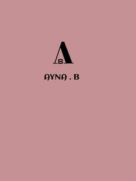

Trade Mark Journal No.2025/029 18 July 2025
UK00004226956 30 June 2025 (3,9,14,16,25,35,41)

- Class 3
- Make up, namely ,Lipsticks, lip gloss ,liquid lipsticks mascara, eyeshadow, powder foundation, liquid eye shadow, eye pencils, eyebrow gel , liquid foundations, foundation sticks, makeup setting sprays and blush; Skincare and Cosmetics, namely, Face cream, face wash, body lotions, facial cleansers, toners, serums, barrier cream for face, sunscreens, face sheet mask, shaving gel, body glitters, makeup removers ,tone up cream for face and body; Haircare, namely, Shampoos, dry shampoo, hair fragrance, hair shiner ,conditioners, hair dyes, hairsprays, mousse, curl cream, hair fragrance, hair serum, hair shiner and hair volume spray; Fragrances, namely, Perfumes, colognes, body sprays, eau de toilette and eau de perfume and essential oils; Lip care, namely, lip balm , lip stain , lip mask , lip gloss , lip tint , lip liners; Nail care, namely ,Nail polish, nail polish remover, false nails, False toenails; false eyes lashes; beauty care preparation.
- Class 9
- Sun glasses; Glasses; Spectacles [glasses]; Eye glasses; Frames for spectacles and sunglasses; Entertainment software; Software; Mobile application software.
- Class 14
- Key chains; Jewellery; Brooches [jewellery]; Necklaces [jewellery]; Charms [jewellery, jewelry (Am.)]; Rings [jewellery, jewelry (Am.)]; Necklaces [jewellery, jewelry (Am.)]; Pearls [jewellery]; Wristlets [jewellery]; Bracelets [jewellery, jewelry (Am.)]; Jewellery items; Fashion jewellery.
- Class 16
- Magazine paper; Magazine covers; Magazines; Poster magazines; Music magazines; Post cards; Picture cards; Note cards; Advertisement boards of card; Card files; Announcement cards [stationery]; Diaries; Blank journal books.
- Class 25
- Clothing; Beach clothes; Denims [clothing]; Jackets [clothing]; Shorts [clothing]; Clothes for sports; Jackets (Stuff -) [clothing]; Clothes for sport; Linen clothing; Headbands [clothing]; Bottoms [clothing]; Capes (clothing); Jerseys [clothing]; Clothing layettes; Clothing for leisure wear; Hoods [clothing]; Woolen clothing; Ready-to-wear clothing; Bodies [clothing]; Tops [clothing]; Belts [clothing]; Belts for clothing; Gussets for underwear [parts of clothing]; Playsuits [clothing]; Collars [clothing]; Pockets for clothing; Veils [clothing]; Knitwear [clothing]; Corsets [clothing, foundation garments]; Silk clothing; Mitts [clothing]; Fabric belts [clothing]; Hats (Paper -) [clothing]; Braces for clothing; Belts (Money -) [clothing]; Money belts [clothing]; Ready-made clothing; Embroidered clothing; Casual clothing; Footwear; Sneakers [footwear]; Footwear for sports; Footwear for women; Casual footwear; Footwear for men; Pumps [footwear]; Leisure footwear; Beach footwear; High-heeled shoes; Sportswear; Walking shoes.
- Class 35
- Marketing research in the fields of cosmetics, perfumery and beauty products; Online retail store services relating to cosmetic and beauty products; Management of performing artists; Business management of performing artists; Talent agency services [business management of performing artists]; Business management of musicians; Business organization and management consultancy including personnel management; Business project management; Business management of musical performers; Business management of entertainers; Business project management services; Professional consultancy relating to business management; Online retail services for downloadable and pre-recorded music and movies; Promotion of musical concerts; Promotion [advertising] of concerts; Advertising; Advertising and advertisement services; Advertising agencies; Advertising and marketing; Banner advertising; Advertising agency services; Copywriting for advertising and promotional purposes; Magazine advertising; Advertising and publicity; Publicity and advertising; Advertising, marketing and promotional services; Advertising analysis; Arrangement of advertising; Hire of advertising billboards; Advertising and promotional services; Leasing of advertising billboards; Advertising, marketing and promotion services; Electronic billboard advertising; Promotion, advertising and marketing of on-line websites; Modelling agency services for advertising purposes; Organisation of exhibitions for commercial or advertising purposes; Online advertising; Leasing of advertising hoardings; Production of advertising matter and commercials; On-line advertising and marketing services; Outdoor advertising; Creating advertising material; Digital advertising services; Organization of art exhibitions for commercial or advertising purposes; Business management; Business management and consulting; Business management planning; Business management and administration; Business management analysis; Online advertising services; Online marketing; Promotion [advertising] of business; Online business networking services; Advertising services for the promotion of e-commerce; Advertising the goods and services of online vendors via a searchable online guide; Advertising, promotional and marketing services; Mail-order advertising; Business promotion; Advertising services; Promoting the music of others by means of providing online portfolios via a website; Compilation of advertisements for use as web pages on the Internet; Production of video recordings for advertising purposes; Video recordings for advertising purposes (Production of -); Production of video recordings for marketing purposes; Retail services in relation to downloadable music files; Providing advertising space in periodicals, newspapers and magazines; Promoting the sale of fashion goods through promotional articles in magazines; Compilation of directories for publication on the internet; Online community management services; Compilation of online business directories; Business marketing services; Product merchandising.
- Class 41
- Music concerts; Recording of music; Music publishing and music recording services; Music performances; Production of music concerts; Music education; Live music concerts; Performance of music; Production of music; Music concert services; Music publishing; Performance of music and singing; Live music performances; Music entertainment services; Publication of music; Arranging of music performances; Artistic management of music venues; Arranging and conducting of music concerts; Entertainment in the nature of live performances by musical bands; Selection and compilation of pre-recorded music for broadcasting by others; Production of musical recordings; Entertainment in the nature of live dance performances; Concert booking; Singing concert services; Rental of concert halls; Reservation services for concert and theatre tickets; Organisation of music concerts; Booking agencies for concert tickets; Reservation services for concert tickets; Pop music concerts (Organisation of -); Ticket reservation services (Concert -); Arranging of concerts; Live band performances; Entertainment services in the form of concert performances; Live performances by a musical band; Management of concerts; Ticket reservation and booking services for music concerts; Live band performance services; Creation [writing] of educational content for podcasts; Video editing; Editing of video recordings; Production of videos; Magazine publishing; Publication of magazines; Publishing of web magazines; Dance studios.
Ayna B LTD